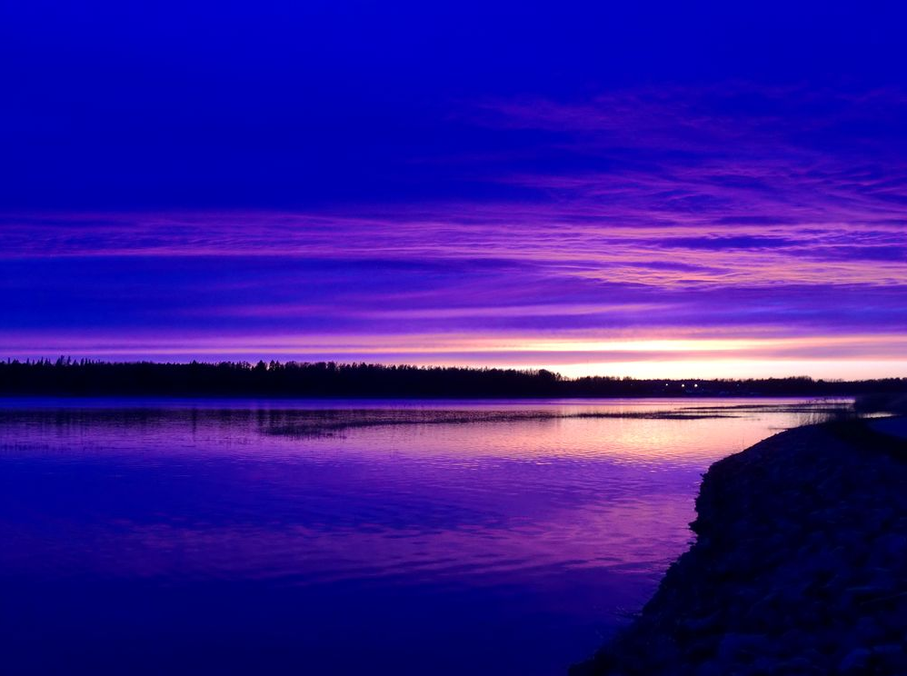
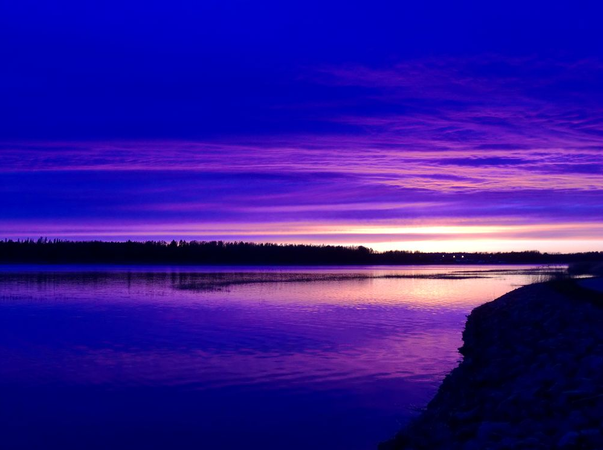

Min nya hobby - Fotografering
Jag har nyligen börjat med en ny hobby - fotografering. Det har varit en spännande resa att lära mig om olika tekniker och utrustning. Här är några av mina favoritbilder och tips för nybörjare:
- Investera i en bra kamera, men kom ihåg att det är fotografen som tar bilden, inte kameran.
- Lär dig grunderna i komposition, som rule of thirds och leading lines.
- Experimentera med olika ljusförhållanden och tider på dagen.
- Redigera dina bilder för att få fram det bästa i dem, men överdriv inte.
- Öva regelbundet och var inte rädd för att göra misstag - det är så du lär dig.
 
